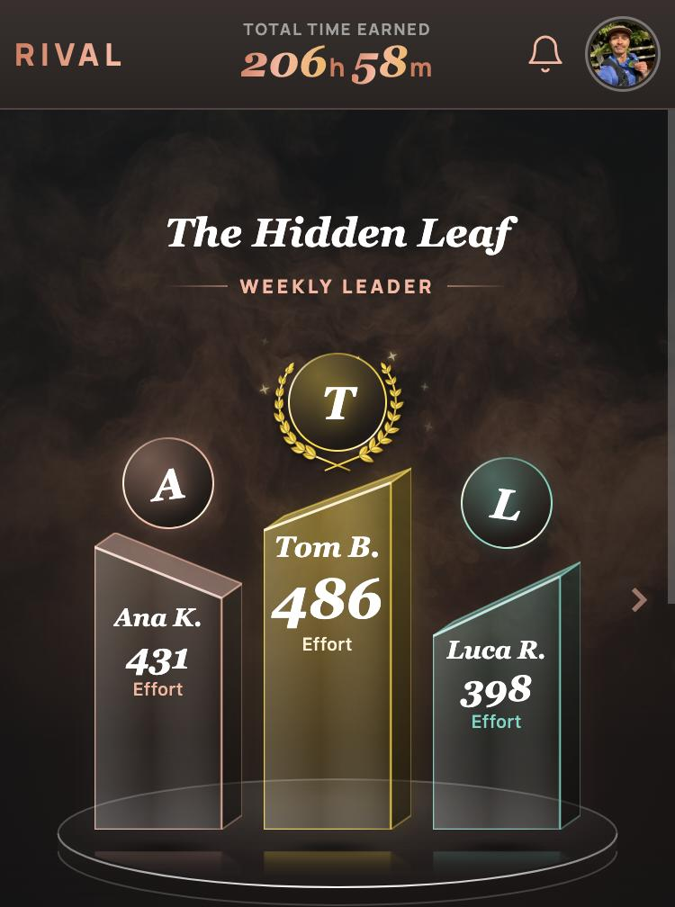
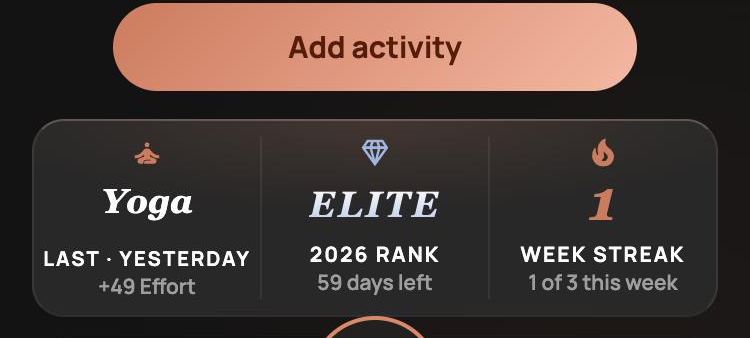

Now · built
The stat card sits fully above the bottom bar.

A · compact
Big 8th as the headline. Beside it: of 12 with the countdown, and the gap to Sandy. The countdown joins that line instead of its own, so nothing below moves. Podium untouched.

8th
OF 12 · 7 DAYS REMAINING100 Behind Sandy M.
